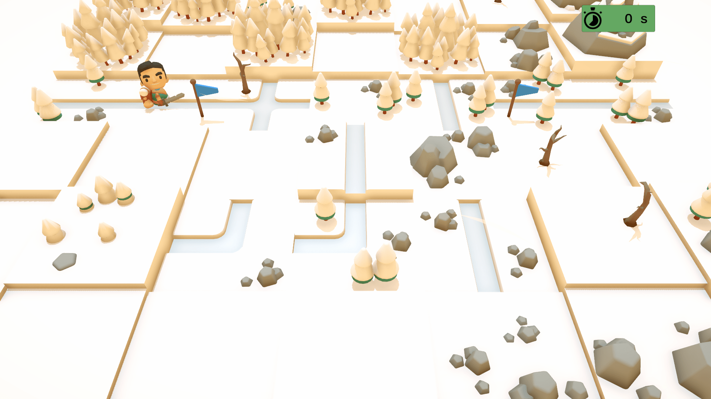
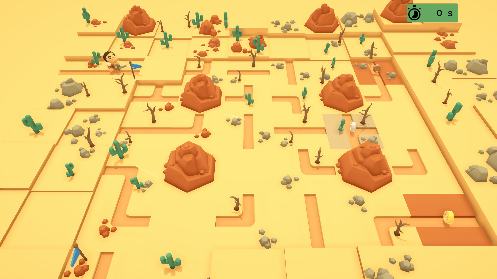
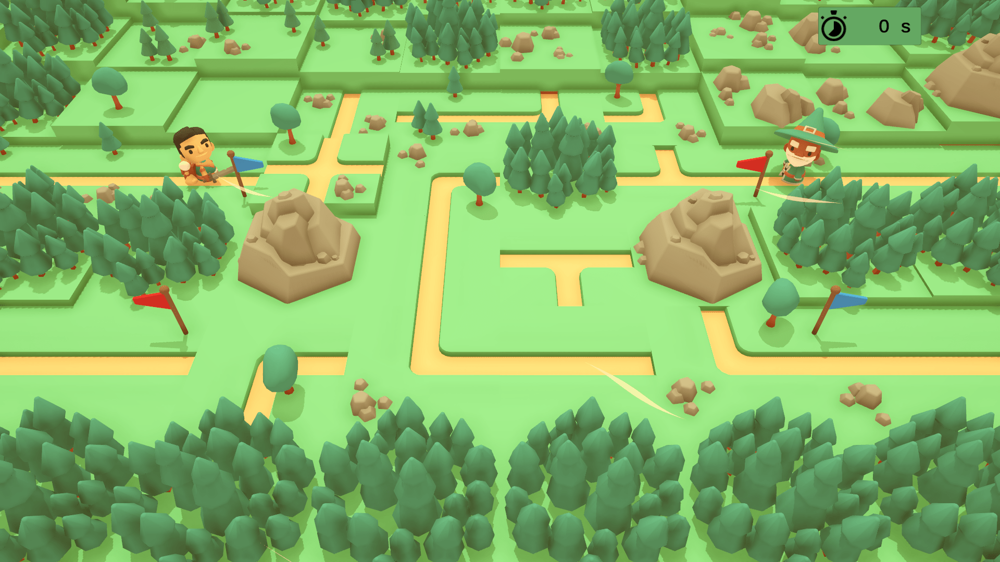
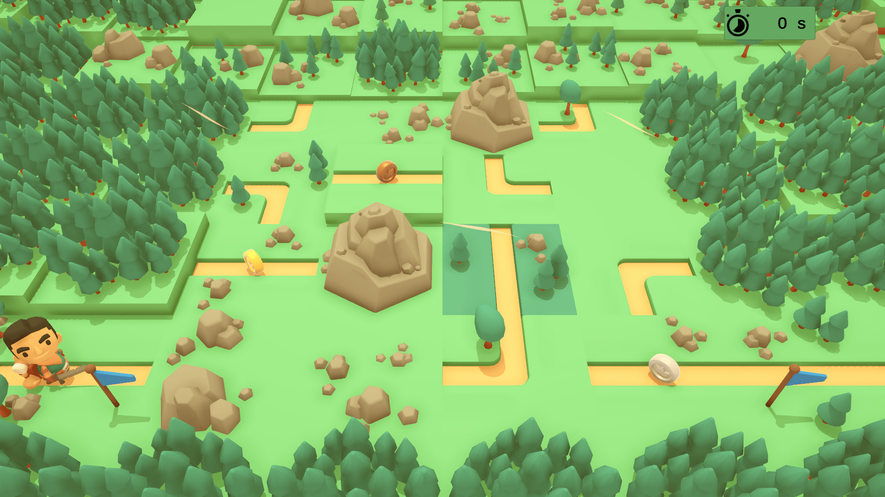
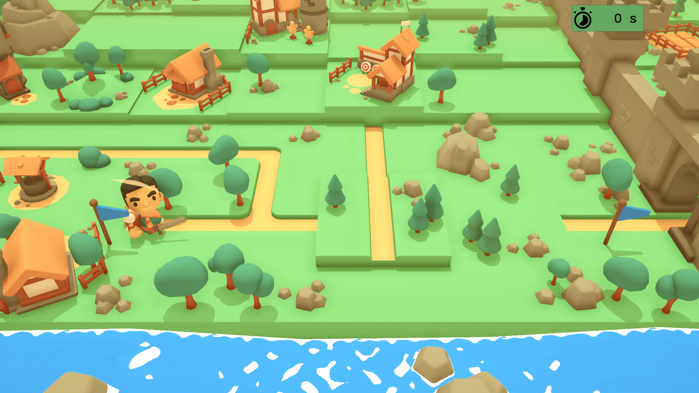
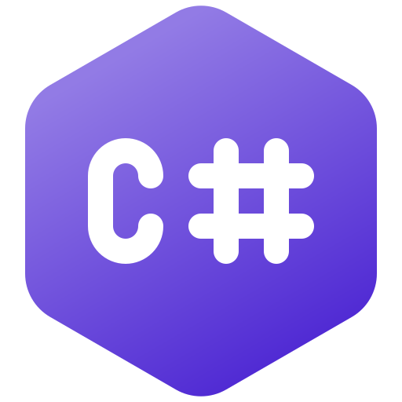

×

The Traveler's Path
A puzzle game where players connect paths to guide the traveler.
It started as a reinterpretation of classic pipe-connecting mechanics, evolving into a visually immersive 3D experience with a medieval theme.
Where to Find?
Technologies Used
Unity

C#
Visual Studio
Notion
Github
Photoshop
Audacity
Development Process
The Traveler's Path became my greatest success, leading me to reach out to publishers for the opportunity to port the game to other platforms.
This experience of bringing the game to consoles beyond PC was invaluable, offering insights into adapting the game to various platforms and audiences, expanding its reach, and enriching the overall development process.
My responsibilities included:
- Market Research and Game Analysis
- Conducted extensive research on puzzle and adventure games to innovate the path-connecting mechanic.
- Blended pipe-puzzle gameplay with the artistic style of games like Moonlighter.
- Creation of GDD and Art Documentation
- Developed a comprehensive GDD outlining game mechanics, flow, and medieval aesthetics.
- Game Mechanics Development
- Built core movement systems and puzzle interactions to create engaging challenges.
- 3D Adaptation
- Integrated and customized 3D assets to create an authentic medieval atmosphere.
- SFX and Shader Development
- Designed particle effects and visual shaders to enhance player immersion.
- Map Design and Creation
- Crafted balanced levels and environments with careful attention to difficulty progression.
- Optimization
- Fine-tuned 3D graphics and performance for smooth gameplay across platforms.
- Design Testing and Iteration
- Refined gameplay through systematic testing and player feedback analysis.
- Post-Launch Publishing and Support
- Oversaw game promotion and delivered updates based on community feedback.
- Publisher Contacts and Porting
- Partnered with global publishers to bring the game to multiple console platforms.